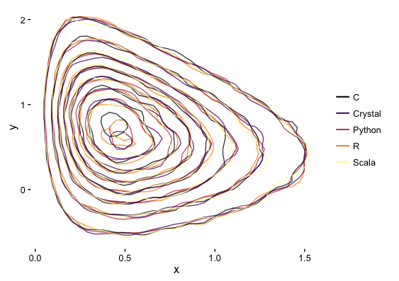

A Gibbs Sampler in Crystal
Recently, I've been following with interest the development of the Crystal language.
Crystal is a statically type language with a syntax resembling Ruby's. The main features which drawn me to it were its simple boilerplate-free syntax (which is ideal for quick prototyping), tied with the ability to compile directly to native code along with a dead simple way of creating bindings to existing C code.
These features make it quite attractive, in my opinion, for scientific computing. To test it against more popular languages, I've decided to run the Gibbs sampling examples created in Darren Wilkinson's blog.
I recommend reading this post, and in fact, if you are interested in Mathematics and scientific computing in general, I strongly recommend you follow the blog.
As explained in the linked post, I will make a Gibbs sampler for
\[ f\left(x,y\right)=kx^2\exp\left\lbrace-xy^2-y^2+2y-4x\right\rbrace \]with
\[ \begin{aligned} x|y &\sim Ga\left(3,y^2+4\right) \\\\ y|x &\sim N\left(\frac{1}{1+x},\frac{1}{2\left(1+x\right)}\right) \end{aligned} \]The original examples were ran again, without any code alterations. I've just added the Crystal version.
This implementation uses a very simple wrapper I wrote to the famous GNU Scientific Language (GSL).
require "../libs/gsl/statistics.cr"
require "math"
def gibbs(n : Int = 50000, thin : Int = 1000)
x = 0.0
y = 0.0
puts "Iter x y"
(0..n).each do |i|
(0..thin).each do |j|
x = Statistics::Gamma.sample(3.0, y\*y+4.0)
y = Statistics::Normal.sample(1.0/(x+1.0), 1.0/Math.sqrt(2.0\*x+2.0))
end
puts "#{i} #{x} #{y}"
end
end
gibbs
(As you can see, the Crystal code is quite similar to the Python one).
To make sure it's a fair comparison, I ran it in compiled (and optimised) mode build using
$ crystal build gibbs.cr --release
$ time ./gibbs > gibbs_crystal.csv
Looking at the results, you can see that they are consistent with the other implementations:

The timings for each of the different versions (ran in a 1.7 GHz Intel Core i7 Macbook Air) were
| Language | Time (s) |
|---|---|
| R | 364.8 |
| Python | 144.0 |
| Scala | 9.896 |
| Crystal | 5.171 |
| C | 5.038 |
So there you have it. A Ruby-like language which can easily compete with C performance-wise.
I sincerely hope that Crystal gets some traction in the scientific community.
That of course won't depend solely on its merits but rather on an active community along with a strong library ecosystem.
This is lacking at the moment, simply because it is relatively new language with the specs and standard library still being finalised.